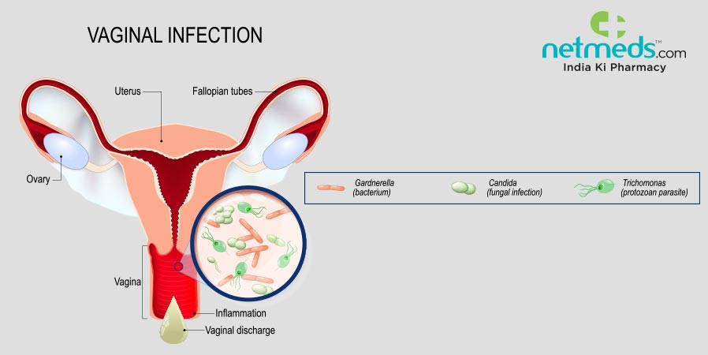

Vaginitis

CAUSES
Vaginitis has multiple causes, depending on what kind of vaginitis you have.
- Changes in the microorganisms in your vagina. Two of the most common types of vaginitis — yeast infections and bacterial vaginosis — occur when there are changes to your vagina’s natural internal environment, or vaginal flora. Yeast infections occur when there’s an overgrowth of candida fungus. Bacterial vaginosis occurs when there’s an overgrowth of Gardnerella vaginalis bacteria and other BV-associated bacteria. Both candida and Gardnerella vaginalis occur naturally in your vagina and keep it healthy, but too much can lead to a vaginal infection.
-
Sexually transmitted infections. Parasites, bacteria and viruses that cause infection can pass from person-to-person through sexual contact. Depending on the STI, infection can spread through vaginal intercourse, anal sex or oral sex, and lead to vaginitis.
-
Products with chemical irritants. Some of the chemicals in products commonly used for good hygiene cause harm instead. Lotions, detergents, sprays and other products may contain chemicals that cause vaginitis.
-
Changing hormone levels. Drops in the amount of estrogen your body makes can cause changes to your vagina that lead to vaginitis.
SYMPTOMS
Symptoms include:
- A thick, white vaginal discharge with the consistency of cottage cheese.
-
A discharge that is somewhat watery and generally odorless.
-
A vagina or vulva that’s itchy, red and sometimes swollen even before the onset of discharge.
-
“Small cuts” on your vulva due to “friable” (very soft) skin of the area.
-
A burning sensation when you pee (dysuria).
DIAGNOSIS
Your healthcare provider will take a thorough medical history, complete a physical exam and swab the inside of your vagina to collect a fluid sample. They will send the sample off to a lab where the cells can be checked for signs of vaginitis. Your healthcare provider may check the PH levels of your vaginal fluid to get closer to a diagnosis.
Some providers may ask that you abstain from sex for 24 hours before your appointment.
TREATMENTS
The important thing to understand is that medication may only cure the most common types of candida associated with vaginal yeast infections and will not cure other yeast infections or any other type of vaginitis. If you aren’t sure, see your healthcare provider. You may save the expense of buying the wrong medication and avoid delay in treating your type of vaginitis (or possibly making it feel worse).